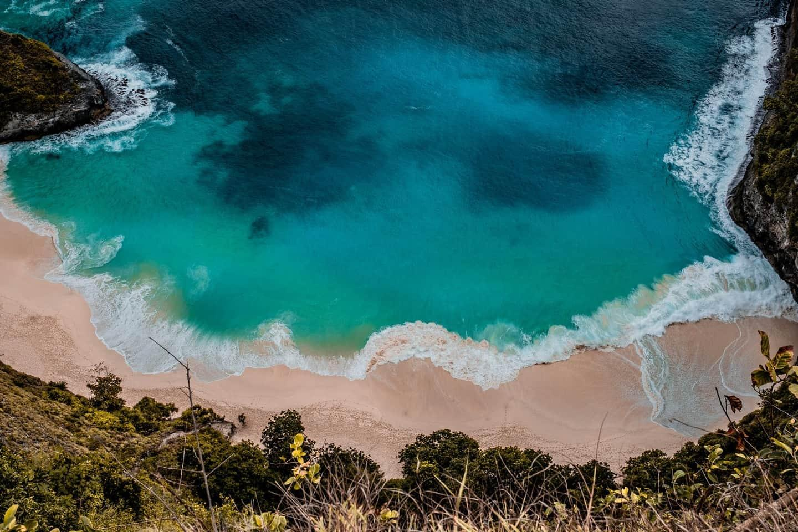
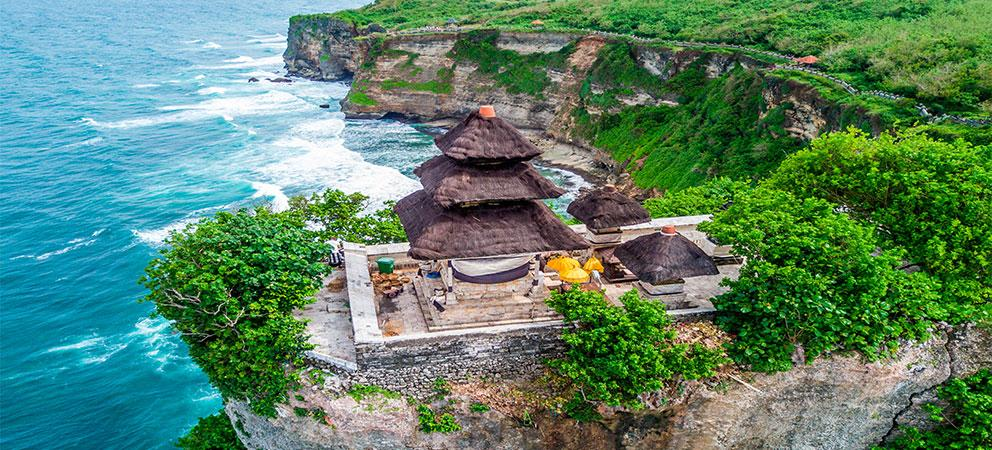

O turismo na Indonésia é um dos principais setores da economia, atraindo milhões de visitantes todos os anos devido à sua diversidade natural e cultural.
O país é conhecido por suas paisagens paradisíacas, com praias de águas cristalinas, ilhas tropicais e áreas de grande biodiversidade.
Bali é o destino mais famoso, destacando-se por suas praias, templos e cultura única, sendo muito procurado por turistas do mundo todo.
Além de Bali, outros destinos ganham destaque, como Jacarta, a capital do país, e Yogyakarta, conhecida por seu patrimônio histórico e cultural.
A Indonésia também oferece diversas opções de ecoturismo, com florestas tropicais, vulcões ativos e parques nacionais que atraem aventureiros e amantes da natureza.
Atividades como mergulho, surf e trilhas são bastante populares, aproveitando a riqueza natural do arquipélago.
A cultura local, com festivais, danças e culinária típica, também é um grande atrativo para os visitantes.
De forma geral, o turismo na Indonésia é diversificado e em crescimento, sendo uma importante fonte de renda e desenvolvimento para o país.

Bali (principal destino)

Templos em penhascos